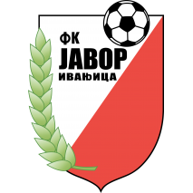
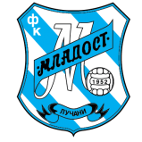
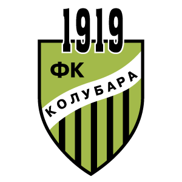
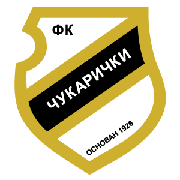

REZULTATI
19.KOLO
| 11.11.2022 18:00 | Javor-Matis |  | 2 - 1 | Napredak | |
| 12.11.2022 15:00 | Mladost |  | 2 - 0 |  | Kolubara |
| 12.11.2022 17:00 | TSC | 2 - 0 | Radnicki Nis | ||
| 12.11.2022 19:00 | Vojvodina | 2 - 1 | Radnicki 1923 | ||
| 13.11.2022 13:30 | Radnik | 1 - 2 | Crvena zvezda | ||
| 13.11.2022 15:30 | Partizan | 1 - 0 | Novi Pazar | ||
| 13.11.2022 17:30 | Cukaricki |  | 2 - 0 | Mladost GAT | |
| 13.11.2022 19:30 | Vozdovac | 2 - 0 | Spartak |
15. kolo - Najbolji igrač 15. kola Mozzart Bet Super lige Srbije je Kristijan Belić, strelac jednog pogotka u pobedi Partizana nad gostujućom ekipom Čukaričkog.
16. kolo - Najbolji igrač 16. kola Mozzart Bet Super lige Srbije je Aleksandar Pešić, strelac oba pogotka za Crvenu zvezdu u pobedi nad ekipom Radničkog u Nišu.
17. kolo - Najbolji igrač 17. kola Mozzart Bet Super lige Srbije je Rikardo Gomeš, strelac u ubedljivoj pobedi Partizana nad ekipom Radničkog iz Niša u Beogradu.
18. kolo - Najbolji igrač 18. kola Mozzart Bet Super lige Srbije je Slobodan Urošević, strelac u pobedi Partizana nad ekipom TSC-a u Bačkoj Topoli.